Campeonato del Mundo de Motociclismo
En esta lista encontrarás todos los podios totales* y victorias* desde 1949 hasta hoy, de las categorías de 50cc, 80cc, 125cc, 250cc, 350cc, 500cc, Moto2, Moto3 y Motogp. *Podios totales es igual a los triunfos conseguidos en los tres escalones. *Victorias es igual a los triunfos conseguidos en el primer escalón. Entre paréntesis, número de victorias. Actualizado el día 06-nov.-22. Última carrera España – Valencia - Cheste
| Pos | Piloto | Imagen | País | Victorias | Podios Totales | Motogp | Moto2 | Moto3 | 250cc | 125cc | 350cc | 80cc | 50cc | Campeonatos Mundiales |
| 201 | Deniz ÖNCÜ |  |
TUR | 4 | 6 | 6 (4) | ||||||||
| 202 | Paul LODEWIJKX | NED | 4 | 6 | 6 (4) | |||||||||
| 203 | Janos DRAPAL | HUN | 4 | 5 | 1 (1) | 4 (3) | ||||||||
| 204 | Nicky HAYDEN | 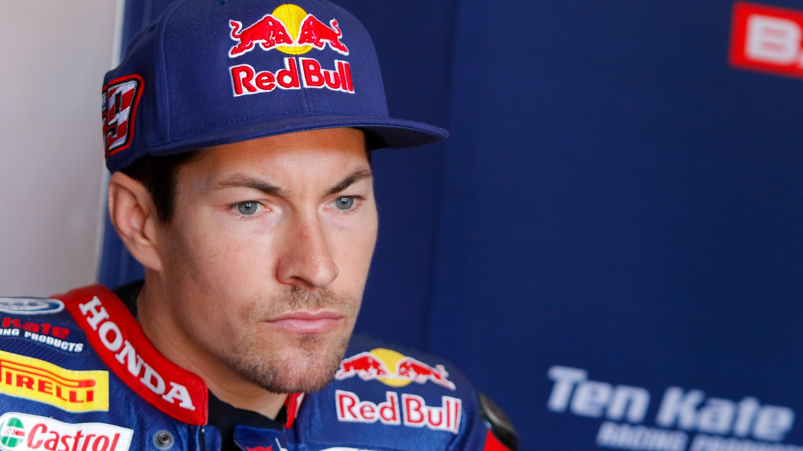 | USA | 3 | 28 | 28 (3) | 1 (2006 - Motogp) |
|||||||
| 205 | Tommy ROBB | IRL | 3 | 28 | 4 | 7 (1) | 7 (1) | 7 (1) | 3 | |||||
| 206 | Patrick FERNANDEZ | FRA | 3 | 26 | 12 (1) | 14 (2) | ||||||||
| 207 | Jack FINDLAY | AUS | 3 | 25 | 24 (3) | 1 | ||||||||
| 208 | Bradley SMITH |  |
GBR | 3 | 25 | 2 | 3 | 20 (3) | ||||||
| 209 | Mike DUFF | CAN | 3 | 24 | 5 | 13 (2) | 2 (1) | 4 | ||||||
| 210 | Silvio GRASSETTI | ITA | 3 | 21 | 1 | 9 (2) | 11 (1) | |||||||
| Pos | Piloto | Imagen | País | Victorias | Podios Totales | Motogp | Moto2 | Moto3 | 250cc | 125cc | 350cc | 80cc | 50cc | Campeonatos Mundiales |
| 211 | Jacques CORNU | SWI | 3 | 21 | 20 (3) | 1 | ||||||||
| 212 | Cal CRUTCHLOW |  |
GBR | 3 | 19 | 19 (3) | ||||||||
| 213 | Alberto PAGANI | ITA | 3 | 19 | 13 (3) | 3 | 2 | 1 | ||||||
| 214 | Sergio GADEA |  |
SPA | 3 | 18 | 1 | 17 (3) | |||||||
| 215 | Frank PERRIS | GBR | 3 | 18 | 4 | 2 | 12 (3) | |||||||
| 216 | Otello BUSCHERINI | ITA | 3 | 17 | 3 | 8 (2) | 2 (1) | 4 | ||||||
| 217 | Michel ROUGERIE | FRA | 3 | 17 | 1 | 10 (2) | 6 (1) | |||||||
| 218 | Norick ABE | JPN | 3 | 17 | 17 (3) | |||||||||
| 219 | Ai OGURA |  |
JPN | 3 | 16 | 8 (3) | 8 | |||||||
| 220 | Martin WIMMER |  |
GER | 3 | 16 | 16 (3) | ||||||||
| Pos | Piloto | Imagen | País | Victorias | Podios Totales | Motogp | Moto2 | Moto3 | 250cc | 125cc | 350cc | 80cc | 50cc | Campeonatos Mundiales |
| 221 | Hideo KANAYA | JPN | 3 | 15 | 5 (1) | 5 (1) | 1 | 4 (1) | ||||||
| 222 | Reinhold ROTH | GER | 3 | 15 | 15 (3) | |||||||||
| 223 | Daryl BEATTIE | AUS | 3 | 14 | 14 (3) | |||||||||
| 224 | Juan GARRIGA |  |
SPA | 3 | 13 | 1 | 12 (3) | |||||||
| 225 | Theo TIMMER | NED | 3 | 12 | 12 (3) | |||||||||
| 226 | Pat HENNEN | USA | 3 | 12 | 12 (3) | |||||||||
| 227 | Alessandro GRAMIGNI |  |
ITA | 3 | 12 | 12 (3) | 1 (1992 - 125CC) |
|||||||
| 228 | Yuki TAKAHASHI | JPN | 3 | 11 | 4 (1) | 7 (2) | ||||||||
| 229 | Jean Philippe RUGGIA | FRA | 3 | 10 | 1 | 9 (3) | ||||||||
| 230 | Julien VAN ZEEBROECK | BEL | 3 | 10 | 1 | 9 (3) | ||||||||
| Pos | Piloto | Imagen | País | Victorias | Podios Totales | Motogp | Moto2 | Moto3 | 250cc | 125cc | 350cc | 80cc | 50cc | Campeonatos Mundiales |
| 231 | Simone SANNA | ITA | 3 | 9 | 9 (3) | |||||||||
| 232 | Emilio MENDOGNI |  |
ITA | 3 | 9 | 3 | 3 (1) | 3 (2) | ||||||
| 233 | Alfredo MILANI | 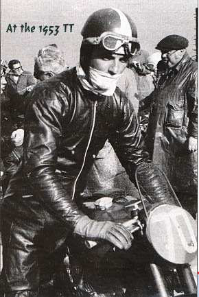 | ITA | 3 | 9 | 9 (3) | ||||||||
| 234 | Mike GRANT | GBR | 3 | 9 | 2 (1) | 4 (2) | 3 | |||||||
| 235 | Gianni LEONI |  |
ITA | 3 | 8 | 3 | 5 (3) | |||||||
| 236 | Keith CAMPBELL |  |
AUS | 3 | 8 | 1 | 7 (3) | 1
(1957 - 350CC) |
||||||
| 237 | Graziano ROSSI | ITA | 3 | 7 | 2 | 5 (3) | ||||||||
| 238 | Bob Foster |  |
GBR | 3 | 6 | 6 (3) | 1 (1950 - 350CC) |
|||||||
| 239 | Charlie WILLIAMS | GBR | 3 | 5 | 1 | 2 (2) | 1 | 1 (1) | ||||||
| 240 | Maurice CANN |  |
GBR | 3 | 5 | 5 (3) | ||||||||
| Pos | Piloto | Imagen | País | Victorias | Podios Totales | Motogp | Moto2 | Moto3 | 250cc | 125cc | 350cc | 80cc | 50cc | Campeonatos Mundiales |
| 241 | Carlos CHECA | 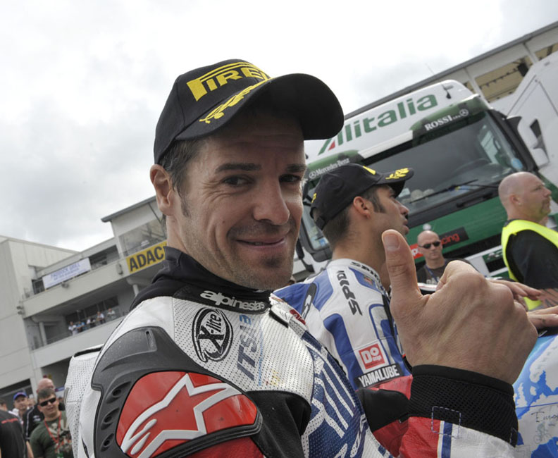 | SPA | 2 | 24 | 24 (2) | ||||||||
| 242 | Manuel HERREROS |  |
SPA | 2 | 22 | 1 | 21 (2) | 1 (1989 - 80CC) |
||||||
| 243 | Ayumu SASAKI |  |
JPN | 2 | 22 | 11 (2) | ||||||||
| 244 | Alan SHEPHERD | GBR | 2 | 20 | 9 (1) | 4 (1) | 5 | 2 | ||||||
| 245 | Jorge NAVARRO | 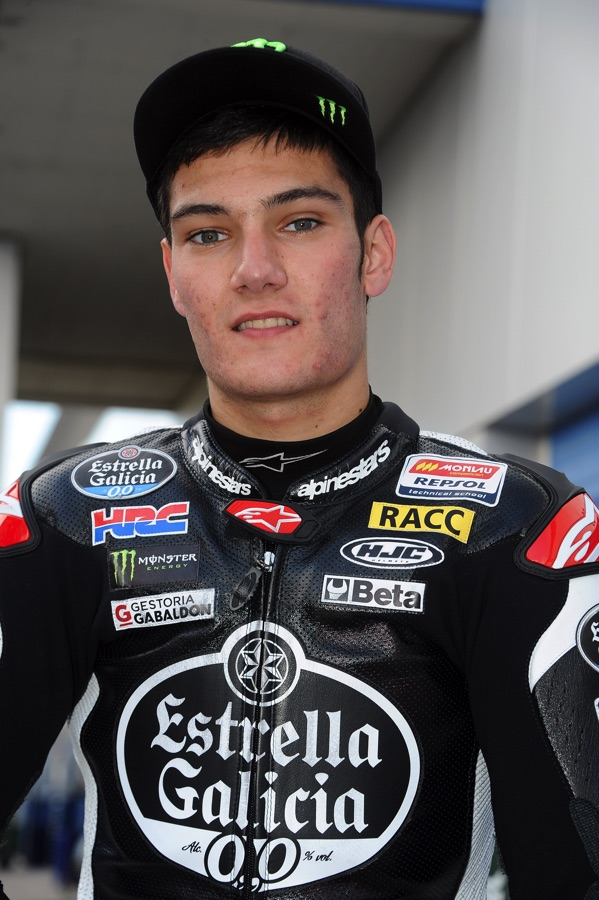 | SPA | 2 | 19 | 10 | 9 (2) | |||||||
| 246 | Fabio DI GIANNANTONIO |  |
ITA | 3 | 22 | 8 (1) | 14 (2) | |||||||
| 247 | Efren VAZQUEZ | SPA | 2 | 16 | 12 (2) | 4 | ||||||||
| 248 | Gianfranco BONERA | ITA | 2 | 15 | 7 (1) | 5 (1) | 3 | |||||||
| 249 | Tom HERRON | IRL | 2 | 14 | 3 (1) | 5 (1) | 6 | |||||||
| 250 | Stuart GRAHAM | GBR | 2 | 14 | 1 | 2 | 7 (1) | 4 (1) | ||||||
| Pos | Piloto | Imagen | País | Victorias | Podios Totales | Motogp | Moto2 | Moto3 | 250cc | 125cc | 350cc | 80cc | 50cc | Campeonatos Mundiales |
| 251 | Xavi VIERGE |  |
SPA | 2 | 4 | 4 (2) | ||||||||
| 252 | Mitsuo ITOH | JPN | 2 | 13 | 3 | 10 (2) | ||||||||
| 253 | Dickie DALE | 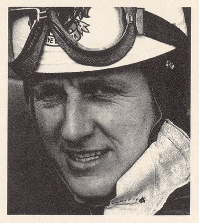 | GBR | 2 | 12 | 5 (1) | 1 | 6 (1) | ||||||
| 254 | Andrea MIGNO |  |
ITA | 2 | 11 | 11 (2) | ||||||||
| 255 | Angelo BERGAMONTI | ITA | 2 | 10 | 7 (1) | 1 | 2 (1) | |||||||
| 256 | Virginio FERRARI |  |
ITA | 2 | 10 | 10 (2) | ||||||||
| 257 | Danilo PETRUCCI | 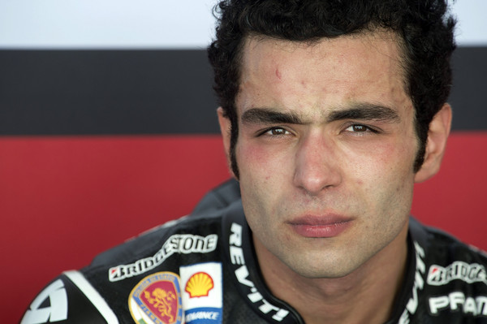 | ITA | 2 | 10 | 10 (2) | ||||||||
| 258 | Ivan PALAZZESE | VEN | 2 | 9 | 1 | 8 (2) | ||||||||
| 259 | Lukas PESEK | CZE | 2 | 9 | 9 ( 2) | |||||||||
| 260 | William DORAN | 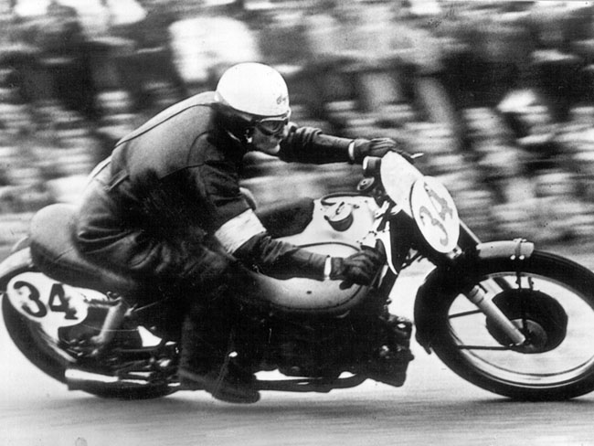 | GBR | 2 | 8 | 5 (1) | 3 (1) | |||||||
| Pos | Piloto | Imagen | País | Victorias | Podios Totales | Motogp | Moto2 | Moto3 | 250cc | 125cc | 350cc | 80cc | 50cc | Campeonatos Mundiales |
| 261 | Eric SAUL | FRA | 2 | 8 | 3 (1) | 5 (1) | ||||||||
| 262 | Pierre MONNERET | 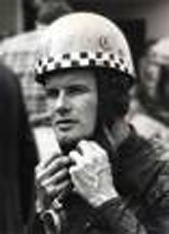 | FRA | 2 | 8 | 5 (1) | 1 | 2 (1) | ||||||
| 263 | Anthony WEST | AUS | 2 | 8 | 3 (1) | 5 (1) | ||||||||
| 264 | Marcos RAMIREZ |  |
SPA | 2 | 8 | 8 (2) | ||||||||
| 265 | Maurizio VITALI | ITA | 2 | 7 | 7 (2) | |||||||||
| 266 | Alex DEBON | 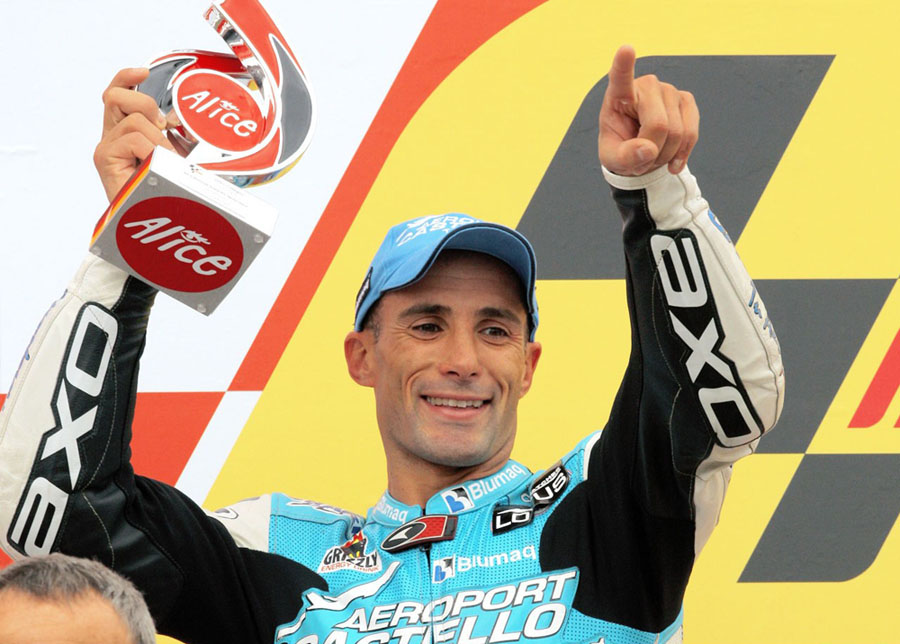 | SPA | 2 | 7 | 1 | 6 (2) | |||||||
| 267 | Tommy WOOD | 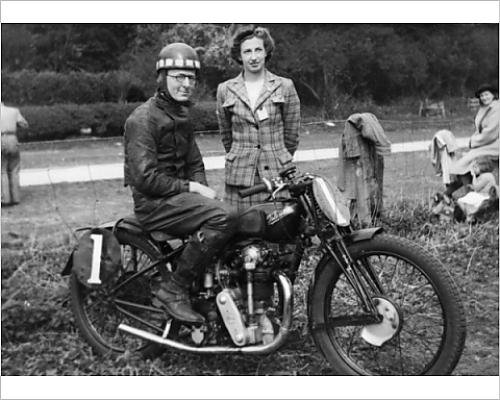 | GBR | 2 | 6 | 1 | 4 (1) | 1 (1) | ||||||
| 268 | Herri TORRONTEGUI |  |
SPA | 2 | 6 | 2 | 4 (2) | |||||||
| 269 | Alonso LOPEZ |  |
ESP | 2 | 6 | 5 (2) | 1 | |||||||
| 270 | Jan HUBERTS | NED | 2 | 5 | 1 | 4 (2) | ||||||||
| Pos | Piloto | Imagen | País | Victorias | Podios Totales | Motogp | Moto2 | Moto3 | 250cc | 125cc | 350cc | 80cc | 50cc | Campeonatos Mundiales |
| 271 | Gianluigi SCALVINI | ITA | 2 | 5 | 5 (2) | |||||||||
| 272 | Salvador CAÑELLAS |  |
SPA | 2 | 5 | 1 (1) | 4 (1) | |||||||
| 273 | Tony RUTTER |  |
GBR | 2 | 5 | 1 | 4 (2) | |||||||
| 274 | Makoto TAMADA | JPN | 2 | 5 | 5 (2) | |||||||||
| 275 | Alexis MASBOU | FRA | 2 | 4 | 4 (2) | |||||||||
| 276 | Arthur WHEELER |  |
GBR | 2 | 4 | 4 (2) | ||||||||
| 277 | Alberto GANDOSSI | ITA | 2 | 4 | 4 (2) | |||||||||
| 278 | Jack MIDDELBURG | NED | 2 | 4 | 4 (2) | |||||||||
| 279 | Harold DANIELL |  |
GBR | 2 | 4 | 2 (1) | 1 (1) | 1 | ||||||
| Pos | Piloto | Imagen | País | Victorias | Podios Totales | Motogp | Moto2 | Moto3 | 250cc | 125cc | 350cc | 80cc | 50cc | Campeonatos Mundiales |
| 280 | Cromie McCANDLESS | IRL | 2 | 3 | 2 (1) | 1 (1) | ||||||||
| 281 | Tatsuki SUZUKI |  |
JPN | 2 | 7 | 7 (2) | ||||||||
| 282 | Helmut KASSNER | GER | 2 | 2 | 1 (1) | 1 (1) | ||||||||
| 283 | Khairul Idham PAWI | 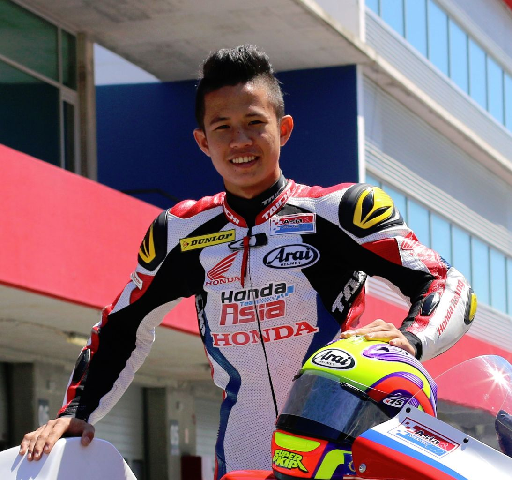 | MAL | 2 | 2 | 2 (2) | ||||||||
| 284 | Remo VENTURI | ITA | 1 | 22 | 11 (1) | 4 | 4 | 3 | ||||||
| 285 | Bruno CASANOVA | ITA | 1 | 16 | 16 (1) | |||||||||
| 286 | Steve JENKNER |  |
GER | 1 | 14 | 14 (1) | ||||||||
| 287 | Takaaki NAKAGAMI |  |
JPN | 1 | 14 | 14 (1) | ||||||||
| 288 | Ginger MOLLOY | NZE | 1 | 13 | 5 | 4 (1) | 3 | 1 | ||||||
| 289 | Peter WILLIAMS |  |
GBR | 1 | 11 | 9 | 2 (1) | |||||||
| 290 | Jos SCHURGERS | NED | 1 | 11 | 5 (1) | 6 | ||||||||
| Pos | Piloto | Imagen | País | Victorias | Podios Totales | Motogp | Moto2 | Moto3 | 250cc | 125cc | 350cc | 80cc | 50cc | Campeonatos Mundiales |
| 291 | Rod COLEMAN |  |
NZE | 1 | 11 | 1 | 10 (1) | |||||||
| 292 | Jack BRETT |  |
GBR | 1 | 11 | 6 (1) | 5 | |||||||
| 293 | Wilco ZEELENBERG | NED | 1 | 11 | 11 (1) | |||||||||
| 294 | Penti KORHONEN | FIN | 1 | 10 | 1 | 3 | 6 (1) | |||||||
| 295 | Roland FREYMOND | SWI | 1 | 10 | 9 (1) | 1 | ||||||||
| 296 | Aleix ESPARGARO |  |
ESP | 1 | 9 | 8 (1) | 1 | |||||||
| 297 | Tomoyoshi KOYAMA | JPN | 1 | 9 | 9 (1) | |||||||||
| 298 | Jean Louis TOURNADRE | 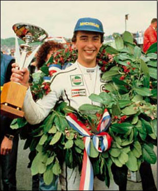 | FRA | 1 | 9 | 9 (1) | 1 (1982 - 250CC) |
|||||||
| 299 | Mario LEGA | 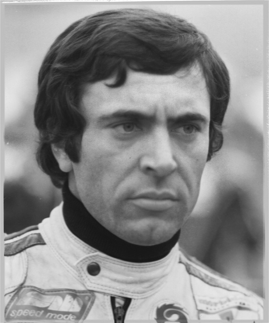 | ITA | 1 | 9 | 7 (1) | 2 | 1 (1977 - 250CC) |
||||||
| 300 | Ulrich GRAF | SWI | 1 | 9 | 9 (1) | |||||||||
| Pos | Piloto | Imagen | País | Victorias | Podios Totales | Motogp | Moto2 | Moto3 | 250cc | 125cc | 350cc | 80cc | 50cc | Campeonatos Mundiales |